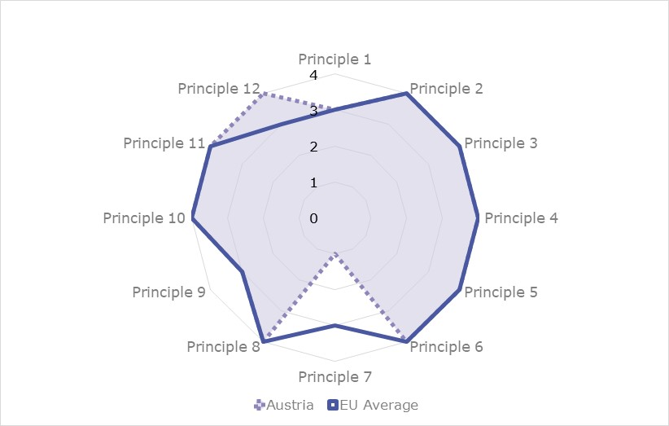
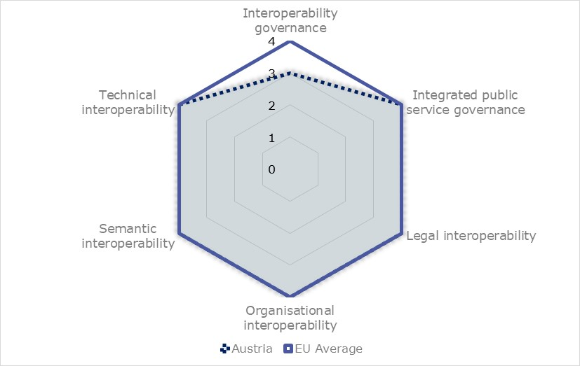
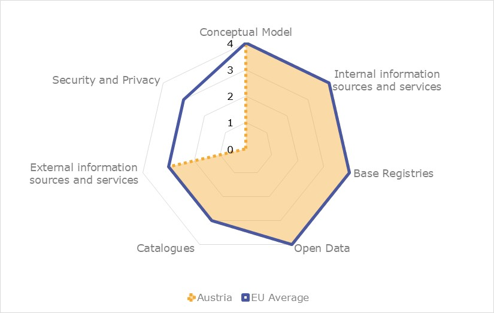

ISA2
Digital Public Administration factsheet 2021
Austria
Table of Contents
1 Country Profile 4
2 Digital Public Administration Highlights 10
3 Digital Public Administration Political Communications 13
4 Digital Public Administration Legislation 18
5 Digital Public Administration Governance 25
6 Digital Public Administration Infrastructure 32
7 Cross-border Digital Public Administration Services 39
Please note that the data collection exercise for the update of the 2021 edition of the Digital Public Administration factsheets took place between March and June 2021. Therefore, the information contained in this document reflects this specific timeframe.

1
Country
Profile
Country Profile
Basic data
Population: 8 879 920 inhabitants (2019)
GDP at market prices: 377 297.2 million Euros (2020)
GDP per inhabitant in PPS (Purchasing Power Standard EU 27=100): 124 (2020)
GDP growth rate: -6.3% (2020)
Inflation rate: 1.4% (2020)
Unemployment rate: 5.4% (2020)
General government gross debt (Percentage of GDP): 83.9 % (2020)
General government deficit/surplus (Percentage of GDP): -8.9% (2020)
Area: 83 879km2
Capital city: Vienna
Official EU language: German
Currency: Euro
Source: Eurostat (last update: 23 July 2020)
Digital Public Administration Indicators
The following graphs present data for the latest Digital Public Administration Indicators for Austria compared to the EU average. Statistical indicators in this section reflect those of Eurostat at the time the factsheet is being prepared.
Interoperability State of Play
In 2017, the European Commission published the European Interoperability Framework (EIF) to give specific guidance on how to set up interoperable digital public services through a set of 47 recommendations. The picture below represents the three pillars of the EIF around which the EIF Monitoring Mechanism was built to evaluate the level of implementation of the EIF within the Member States. It is based on a set of 68 Key Performance Indicators (KPIs) clustered within the three main pillars of the EIF (Principles, Layers and Conceptual model), outlined below.

Source: European Interoperability Framework Monitoring Mechanism 2019
For each of the three pillars, a different scoreboard was created to breakdown the results into their main thematic areas (i.e. the 12 principles of interoperability, the interoperability layers and the components of the conceptual model). The thematic areas are evaluated on a scale from one to four, where one means a lower level of implementation and 4 means a higher level of implementation. The graphs below show the result of the second EIF Monitoring Mechanism data collection exercise for Austria in 2020.
Source: European Interoperability Framework Monitoring Mechanism 2020
Austria’s results in Scoreboard 1 show an overall good implementation of the EIF Principles, scoring above the European average in the Principle 12 (Assessment of Effectiveness and Efficiency), and despite the lower performance with a score of 1 on Principle 7 (Inclusion and accessibility). This area of improvement (Inclusion and accessibility) is due to an incomplete implementation of corresponding recommendations. Indeed, measures for ensuring that public services are accessible to all European citizens (by complying with e-accessibility specifications) could be further improved to reach the maximum score of 4.
Source: European Interoperability Framework Monitoring Mechanism 2020
The Austrian results for the implementation of interoperability layers assessed for Scoreboard 2 show an overall good performance. The remaining potential area of improvement to enhance the country’s implementation of the recommendations under Scoreboard 2, is the interoperability governance. Particularly, the score of 1 for Austria in Recommendation 24, stating that Austria should actively participate in standardisation work relevant to the country’s needs to ensure its requirements are met, lowers the overall organisational interoperability result for Austria, as well as Recommendation 22, which encourages the use of a structured, transparent, objective and common approach to assessing and selecting standards and specifications, hinders the country’s results with regard to interoperability governance.
Source: European Interoperability Framework Monitoring Mechanism 2020
Austria’s scores assessing the Conceptual Model in Scoreboard 3 show an overall good performance in the implementation of corresponding recommendations, much aligned with the EU average despite the lack of data in the area of security and privacy. Moreover, some improvements can be made in implementing recommendations related to catalogues and external information sources and services. Concretely, the low availability of catalogues of public services, public data, and interoperability solutions described by a common model (Catalogues - Recommendation 44) hinders the overall Austrian score on the Catalogues area. On the other hand, the absence of implementation of the external information sources and services while developing European public services lowers Austria’s score in the area related to external information sources and services.
Additional information on Austria’s results on the EIF Monitoring Mechanism is available online through interactive dashboards.
eGovernment State of Play
The graph below presents the main highlights of the latest eGovernment Benchmark Report, an assessment of eGovernment services in 36 countries: the 27 European Union Member States, as well as Iceland, Norway, Montenegro, the Republic of Serbia, Switzerland, Turkey, the United Kingdom, Albania and Macedonia (referred to as the EU27+).
The study evaluates online public services on four dimensions:
- User centricity: indicates the extent to which a service is provided online, its mobile friendliness and its usability (in terms of available online support and feedback mechanisms).
- Transparency: indicates the extent to which governments are transparent about (i) the process of service delivery, (ii) policy making and digital service design processes and (iii) the personal data processed in public services.
- Cross-border services: indicates the extent to which users of public services from another European country can use the online services.
- Key enablers: indicates the extent to which technical and organizational pre-conditions for eGovernment service provision are in place, such as electronic identification and authentic sources.
The 2021 report presents the biennial results, achieved over the past two years of measurement of all eight life events used to measure the above-mentioned key dimensions. More specifically, these life events are divided between six ‘Citizen life events’ (Career, Studying, Family life, measured in 2020, and Starting a small claim procedure, Moving, Owning a car, all measured in 2019) and two ‘Business life events’ (Business start-up, measured in 2020, and Regular business operations, measured in 2019).

Source: eGovernment Benchmark Report 2021 Country Factsheet

Digital Public Administration Highlights
2
Digital Public Administration Highlights
Digital Public Administration Political Communications
The Austrian Government Programme, ‘In Responsibility for Austria - Government Programme 2020 – 2024’, sets digitisation as a particularly high priority. This remark is followed by a number of measures that will establish and further ensure Austria’s role as a leading digital nation.
The Vision ‘Digital Austria in 2040-2050’, which includes the necessary values and characteristics of a digital responsible society, is the starting point for the overall digitalisation strategy.
The Vision provides the necessary framework for the Digitalisation Strategy, which will in turn consist of several strategic action plans focusing on selected priority topics . In 2020, initial plans on the topics of data chances, resilience and economic growth have already been drawn up. Further thematic action plans will follow in 2021.
Digital Public Administration Legislation
On 1 January 2020, the right to electronic correspondence with the public administration entered into force (eGovernment-Act), recognising in this way digital government as a right of the citizens. As a result, they have now the opportunity of handling their contacts with the authorities electronically and entirely without a break in media.
Moreover, the regulatory framework ‘The Digital Office’ to amend the existing legal frame is currently being developed. It aims at creating a contemporary legal framework for the development, testing and application of new/selected inter-ministerial electronic administrative processes and services and ensuring a broad stakeholder involvement. The framework is being developed in several phases, the first one is planned to be finalized in 2021.
The most recent amendment of the Austrian eGovernment Act entered into force on 1 January 2021. It established an important step towards ‘Mobile First’ by considering the technical developments with regard to a simplified and at the same time secure smartphone-based use of the electronic identification (eID). It also introduced the legal basis for a digital driver's license for eID holders.
Furthermore, this year’s highlights include the Austrian Web-Accessibility Act, which defines the accessibility requirements for federal websites and mobile applications so that they are more accessible for users, especially for people with disabilities and implements the Web Accessibility Directive. It entered into force on 23. July 2019. Additional to the federal level, there are 9 different acts in the respective federal states, implementing the Web-Accessibility Directive.
Lastly, the competent authority on the federal level is the Austrian Research Promotion Agency (FFG), which monitors the compliance of websites and mobile applications of public sector bodies (on federal level and also for 7 of the 9 federal states) in Austria with the accessibility requirements.
Digital Public Administration Governance
With the resolution of the new Federal Ministries Act in 2020, the Austrian Federal Computing Centre (Bundesrechenzentrum – BRZ) was incorporated into the Federal Ministry for Digitisation and Business Location (BMDW), transforming it into a competence centre for digitisation.
Digital Public Administration Infrastructure
Austria has defined as priorities for 2021 the following topics: mobile government (including the start of an ID platform), the implementation of the once-only principle across infrastructures and cloud computing.
In March 2019, the government relaunched the Austrian One-Stop eGoverment portal for citizens - oesterreich.gv.at. The portal is based on the internationally recognised and award-winning One-stop portal HELP.gv.at. It has been expanded with the introduction of new services for citizens (e.g., baby point and relocation) and relaunched under the new name of oesterreich.gv.at. In addition, in March 2019 a chatbot named “Mona” and a dedicated mobile app (Digital Office App) were launched to improve the service quality of Austria’s most used eGoverment portal for citizens. As part of the further development of the mobile phone signature into the ID Austria, the Digital Office App is also to be expanded into an ID platform, including new functionalities (e.g. electronic driving licence or registration certificate).
Another key focus is on reducing administrative burden. Austria puts very strong emphasis on delivering Public Services using the Once-Only Principle for domestic but also cross border transactions to reduce administrative burden for businesses through automatic data exchange between authorities. Register connection, security and transparency have the highest priority in the implementation of the Once-Only Principle.
The Austrian Cloud (Ö-Cloud) initiative was launched on 10 June 2020. The initiative aims to increase Austria's resilience and data sovereignty. Together in partnership with the Austrian industry, Austria will play an active part in the GAIA-X project. With the Ö-Cloud Austria pursues the following goals: connecting Austrian cloud providers into a synergetic network system; strengthening data sovereignty and improving transparency and integrity through comprehensible processing of data.

Digital Public Administration Political Communications
3
Digital Public Administration Political Communications
Specific political communications on digital public administration
Digital Action Plan Austria
On 8 June 2020, the Federal Minister launched the Digital Action Plan Austria. The action plan – which was developed together with experts from science, economy and public administration – addresses the prerequisites for a successful digital transformation in Austria. The plan primarily focuses on the stimulation of the economy (mainly e-commerce), tailored employee training, and targeted subsidies and programmes for small and medium-sized enterprises (SMEs).
More specifically, the Digital Action Plan Austria is an evolving strategy that aims to successfully cope with the digital transition. It is based on the vision ‘Digital Austria 2040–2050’ and consists of thematic action plans. These action plans deal with specific priority topics, the most prominent being at the moment data economy and resilience, although other thematic action plans are foreseen (such as sustainability).
Digitisation Strategy
The vision ‘Digital Austria in 2040–2050’, which outlines the necessary values and characteristics of a digital responsible society, is the starting point for the overall Digitisation Strategy. The vision mainly focuses on competitiveness, innovative strength, prosperity, climate protection, health and cultural heritage, and provides the necessary framework for the Digitisation Strategy, which in turn consists of several strategic action plans that focus on selected priority topics. The strategy intends to harmonise and merge many existing strategies, and replace partly outdated ones (e.g. the Digital Roadmap Austria).
With the Digitisation Strategy, Austria aims to (i) make ‘system Austria’ crisis-proof; (ii) enhance competitiveness; (iii) position Austria as a digital innovation region; (iv) make targeted use of data for innovation; (v) design education, training and continuing education as a digital competitive advantage; (vi) promote top digital research in a targeted manner; and (vii) facilitate digital communication between the State and its citizens. This way Austria pursues the goal to establish and further ensure its role as a leading digital nation, and to guarantee and expand prosperity, job opportunities and quality of life in the long term.
Fostering the digital transformation in selected priority areas and improving user‑centric, modern eGovernment services are among the main objectives within the strategic action plans. Each action plan contains concrete measures and implementation steps on a specific topic. As of 2020, initial plans on the topics of data chances and data economy, resilience and economic growth had already been drawn up. Further thematic action plans will follow in 2021. The process for the digital strategic action plans is streamlined in close cooperation with the Chief Digital Officer (CDO) taskforce of the federal government.
eGovernment Vision 2020 (2009–2020)
The Platform Digital Austria (PDÖ), which is the Austrian federal government's coordination and strategy committee for eGovernment, formulated some principles for continued fruitful cooperation in the field of eGovernment. These are included in the short document eGovernment Vision 2020, which is not a legally-binding strategy but sets out the mission statement and basic strategic principles to be followed in the years to come in relation to eGovernment initiatives. While the vision and principles of the document still apply, the Austrian government is preparing a new eGovernment strategy.
Federal eGovernment Strategy
The Federal eGovernment Strategy, which is being revised under the current federal government, pursues an efficient implementation of electronic government services, based on the basic premise that all businesses and citizens must be able to perform all the procedures of public administration quickly and easily, electronically and without any special technical expertise. To achieve this goal, the Austrian eGovernment strategies promoted the involvement of and close cooperation between the federal State, cities and municipalities.
Berlin Declaration on Digital Society and Value-Based Digital Government
In December 2020, the Austrian government signed the Berlin Declaration on Digital Society and Value-Based Digital Government, thus re-affirming its commitment – together with other European Union (EU) Member States – to foster digital transformation in order to allow citizens and businesses to harness the benefits and opportunities offered by modern digital technologies. The Declaration aims to contribute to a value-based digital transformation by addressing and strengthening digital participation and digital inclusion in European societies.
Interoperability
Austrian Interoperability Framework
The establishment of the Austrian public services was an important initiative which represented a common goal among the different initiatives to which the federal government has agreed to. The approval of the Austrian Interoperability Framework (AIF) in January 2015 set a mutual goal to guide, promote and support the delivery of Austrian public services by fostering cross-border, cross-organisation and cross-sector interoperability. The framework addressed issues such as its underlying principles, the conceptual model for public services, the interoperability levels, the interoperability agreements and the interoperability governance.
More specifically, the purpose of the AIF was:
- to promote and support the delivery of Austrian public services by fostering cross-border, cross-organisation and cross-sector interoperability;
- to guide public administrations in their work to provide Austrian public services to businesses and citizens; and
- to complement and tie together the various Organisational Interoperability Frameworks (OIFs) at Austrian level.
This non-technical document was addressed to all those involved in defining, designing and implementing Austrian public services. The AIF should be taken into account when making decisions on Austrian public services that support the implementation of Austrian policy initiatives. The AIF should also be considered when establishing public services that in the future may be reused as part of Austrian public services.
Once-Only principle
The Once-Only principle has been a pivotal part of Austria’s digital public administration efforts in recent years, with a strong focus given to this principle within the current Austrian government programme as well as the Austrian Digitisation Strategy. The federal government has identified the Once-Only principle, and herewith the reduction of administrative burdens for citizens as well as for companies, as a key issue to be addressed in this legislative period (2020–2024). This includes several measures to alleviate the burden of information obligations on businesses and citizens, that should provide their data only once to the administration.
Thanks to the smart use of back-office data available to a growing number of public authorities, it became possible to provide to citizens ‘no-stop’ procedures in which visits to or contacts with authorities were eliminated entirely. For example, Austria grants a family allowance for which no application is necessary, i.e. citizens automatically receive the benefits that they are entitled to without having to complete or send in any form. Since the implementation in May 2015, families have automatically received the allowance granted at the birth of a child without having to apply for it. Overall, an estimated 80 000 families a year benefit from this ‛no-stop shopʼ solution.
At the same time the Austrian government places strong emphasis on improving the framework conditions for companies. This includes taking concrete measures to reduce the information obligations for companies and thus alleviating the administrative burdens.
The Digital Office regulatory framework amends the existing legal framework in order to create a new legal basis for the development, testing and application of new/selected inter-ministerial electronic administrative processes and services (broad stakeholder involvement is planned to be finalised in 2021). This will further support the implementation of the Once-Only principle.
Key enablers
Access to public information
Open Government Data
Fostering the provision and use of open government data to increase transparency and create new opportunities for companies was a major cornerstone of the Austrian government programme ‘In Responsibility for Austria - Government Programme 2020–2024’. The Task Force PSI as coordination body within the Federal Ministry for Digital and Economic Affairs is working on the implementation of the set goals.
eID and Trust Services
eID
With regards to the strategic mobile first orientation, the Austrian Government Programme 2020–2024 provided for a mobile eID that can be used for eGovernment services as well as for private sector applications in the same secure and user-friendly way. The common project of the Ministry for Digital and Economic Affairs and the Federal Ministry of the Interior is planned to be completed during 2021. Still in 2021 the Austrian eID (ID Austria) is to be expanded to an ID platform including further helpful functions (e.g. proof of certain details/permissions such as age, nationality or driving licence).
Security aspects
National Cybersecurity Strategy
The Austrian National Cybersecurity Strategy (Österreichische Strategie für Cyber Sicherheit or ÖSCS) was implemented in 2013. It was developed on the basis of the Security Strategy and is guided by the principles of the Austrian Programme for Critical Infrastructure Protection. More specifically, the strategy is a comprehensive and proactive concept for protecting the cyberspace and the people in the virtual space while guaranteeing human rights. It aims to enhance the security and resilience of Austrian infrastructures and services in the cyberspace. Since new challenges have emerged, Austria is currently updating the Cybersecurity Strategy adopted in 2013.
Based on the 2013 strategy, an annual report on cybersecurity in Austria was prepared by the Cybersecurity Steering Group. The 2020 Cybersecurity Report built on the content of previous years’ reports, supplementing it with current international and operational developments. The objective of the report is to provide a summary of the cyberthreats, and the national and international developments.
Interconnection of base registries
Register- und Systemverbund
The implementation of a Once-Only Portal (Register- und Systemverbund) as basis for the targeted reduction of administrative burdens (information obligations) was agreed by a decision of the Austrian Council of Ministers on 6 October 2020, and thereof implemented. The register and system network means a further important step towards user-centric and efficient eGovernment. Interfaces will allow the data protection-compliant use of existing data. The data records will not have to be stored or centralised and will remain with the responsible bodies. The high Austrian data protection level remains untouched.
eProcurement
Public Tenders
According to the 2018 Federal Public Procurement Act that entered into force on 18 April 2019, all public tenders in Austria are announced in the one-stop eGovernment platform for businesses, i.e. the Business Service Portal (Unternehmensserviceportal, USP), giving SMEs free and unlimited access to tenders of 7 000 public authorities. A free tender search is available since March 2019.
Domain-specific political communications
No political communication has been adopted in this field to date.
Emerging Technologies
Artificial Intelligence Mission Austria 2030
The Artificial Intelligence Mission Austria 2030 (AIM AT 2030) strategy was launched by a decision of the Austrian Council of Ministers on 23 November 2018. AIM AT 2030 is an experts’ report for the correct handling of artificial intelligence (AI). This means the optimal exploitation of opportunities and, simultaneously, the prevention of possible undesirable developments.
The development of the upcoming Austrian AI strategy as announced in the current government programme 2020-2024 was launched with a decision of the Austrian Council of Ministers on 16 October 2019. The strategy will be based on the present expert report from 2019 (elaborated by 150 experts).
Blockchain, Virtual Reality, Augmented Reality and Smart Cities
Blockchain, virtual reality, augmented reality and smart cities are, among others, important pieces of the puzzle of the vision for a comprehensive digitisation strategy and for the strategic digital action plans currently being developed by the Ministry for Digital and Economic Affairs. As of 2020, initial plans on the topics of data chances, resilience and economic growth had already been drawn up. Further thematic plans will follow.

Digital Public Administration Legislation
4
Digital Public Administration Legislation
Specific legislation on digital public administration
eGovernment Act
The eGovernment Act, the centrepiece of Austrian eGovernment law, entered into force on 1 March 2004 and was last amended on 31 December 2020. Austria was one of the first EU Member States to adopt a comprehensive legislation on eGovernment. This act is the core of Austrian laws on eGovernment. It serves as the legal basis for eGovernment instruments and components. Many mechanisms - such as the Citizen Card (Bürgerkarte; in the future, eID or ID Austria), sector-specific personal identifiers and electronic delivery - can also be put to use in the private sector.
The most important principles of eGovernment law are:
- freedom of choice for users in selecting the means of communication when contacting public authorities; and
- security and improved legal protection provided by appropriate technical measures such as the Citizen Card.
The recent amendments to the eGovernment Act, which entered into force on 31 December 2020, were made in consideration of the technical developments associated with a simplified smartphone-based use of the eID as well as to increase the data quality and widen the use of the eID. They also introduced the legal basis for a ‘digital’ driver’s license for eID holders.Right to electronic correspondence of citizens with the public administration (according to Article 1a of the eGovernment Act)
On 1 January 2020, the right to electronic correspondence with authorities entered into force. Thanks to that, citizens may now handle their contacts with the authorities entirely electronically.
General Administrative Procedures Act
The General Administrative Procedures Act lays down the basic principles of administrative procedures. Article 13 is relevant to eGovernment in that it regulates the ways in which public authorities and citizens can communicate with each other, such as the transmission of applications by email or web forms. The authority’s website specifies the addresses to which application forms can be sent, whether an electronic signature is needed and which formats are recommended or required for the application.
Since 1 January 2011, documents issued by public authorities require a handwritten signature, certification or official signature. All electronic copies of paper documents from public authorities are required to have an official signature. The official signature is an advanced electronic signature including specific elements to certify the official origin of the document.
Web-Accessibility Act
The Austrian Web-Accessibility Act entered into force on 23 July 2019 and implements the Web Accessibility Directive. It defines the accessibility requirements for federal websites and mobile applications so that they are more accessible for users, especially for people with disabilities. In addition to the federal level, nine different acts implement the Web Accessibility Directive in the respective federal states.
The competent authority on the federal level is the Austrian Research Promotion Agency (FFG), which monitors the compliance of websites and mobile applications of public sector bodies (on federal level and also for seven out of the nine federal states) in Austria with the accessibility requirements.
Interoperability
eGovernment Act - Once-Only Principle
Austria’s eGovernment Act contains a provision (Article 17(2)) on the Once-Only principle, which states that public authorities are obliged, pursuant to their technical possibilities and in compliance with the requirements stipulated by law, to draw on the available data of the person concerned from public registers of a client under public law. Thus, certain information (birth certificates, proof of citizenship, proof of residency or documents from the Commercial Registry) need no longer be provided by the person concerned but can, with the person’s consent or with legal authorisation, be directly requested by the authority from an electronic register. The public authority’s responsibility to enable queries in their registers in no way increases their right to release information, since they are based solely on existing authorisations.
Key enablers
Access to public information
Constitutional Law on Access to Information
The Constitutional Law on Access to Information (Auskunftspflichtgesetz) became effective on 1 January 1988. This law contained provisions on access to public information at the federal and regional level. It stipulated a general right of access and obliged federal authorities to answer questions regarding their areas of responsibility, insofar as this did not conflict with a legal obligation to maintain secrecy. However, it did not permit citizens to access documents, but only to receive answers from the government on the content of information. The nine Austrian Länder enacted laws that placed similar obligations on their authorities.
Reuse of Information Act
Directive 2003/98/EC on the re-use of public sector information (PSI Directive) was transposed into national law at federal level through the Reuse of Information Act (Informationsweiterverwendungsgesetz, IWG) in November 2005. To achieve the complete transposition of the PSI Directive, pertinent legislation was passed in all nine Austrian Länder. On 7 September 2007, Austria notified the last pending implementation (State Law of Salzburg), thereby completing transposition of the PSI Directive. An amendment regarding the transposition of the revised Open Data and PSI Directive is currently in preparation.
eID and Trust Services
SourcePIN Register Regulation
The SourcePIN Register Regulation specifies the tasks of the SourcePIN Register Authority which are necessary for the implementation of the Citizen Card concept and the cooperation with its service providers. The main provisions deal with the following:
- the process for creating identity links, in particular the duties of registration offices, the validation of identity and the identity link dataset;
- the transformation of sector-specific personal identifiers (ssPIN) into ssPINs from other sectors, generating ssPINs for certain mandate relationships, and the configuration of data applications from the public sector controller; and
- the electronic presentation and verification of mandate relationships as pertains to the Citizen Card concept. One of the remarkable achievements of the Citizen Card concept is the ability to mandate relationships electronically. The SourcePIN Register Authority signs or seals the mandate dataset and thus prevents forgery of such datasets stored on Citizen Cards. The SourcePIN Register Authority enables users to view and revoke mandates online.
An amendment of the SourcePIN Register Regulation and the Supplementary Register Regulation regarding the transition from the current Citizen Card system to ID Austria (eID) is currently in preparation.
eGovernment Sector Delimitation Regulation
For the purpose of generating ssPINs, each public sector data application needs to be assigned to a sector of State activity. The eGovernment Sector Delimitation Regulation defines the sectors and the sector identifiers.
Supplementary Register Regulation
The Supplementary Register Regulation plays an important role in the implementation of the Citizen Card concept as it enables natural persons and other involved parties, who, due to legal restrictions, are not permitted to be entered into the primary registers, to be registered in the supplementary register.
The Supplementary Register is comprised of two registers: one for natural persons and one for other concerned parties. The eGovernment Act allows the SourcePIN Register Authority to take over the duties of service provider from the Ministry of Interior for the supplementary register for natural persons and from the Ministry of Finance for the second supplementary register.
An amendment of the SourcePIN Register Regulation and the Supplementary Register Regulation regarding the transition from the current Citizen Card system to ID Austria (eID) is currently in preparation.
Signature and Trust Services Act
Through the creation of a new EU-wide harmonised legal framework for trust services, the Signature and Trust Services Act (SVG) was rescinded and a new accompanying law implementing the Regulation on electronic identification and trust services (eIDAS Regulation) was issued on the topic of trust services.
The SVG regulates those areas in which the directly applicable eIDAS Regulation gives Member States the possibility of issuing national regulations. In particular, this concerns regulations or specifications in the areas of trust service providers, supervision, formal aspects, liability and penalties in the event of non-compliance with the specifications of the eIDAS Regulation. Although the SVG applies to all trust services, the creation, validation and preservation of electronic signatures continue to be the core. It therefore continues to be possible to sign contracts electronically with an electronic signature with the same effect as if the contract were signed by hand. In addition, an important step for consumer protection was made with the SVG: companies can no longer exclude in hidden clauses the acceptance of the electronic signature and thus, for example, prevent electronic terminations of subscriptions.
The last amendments to the act, made on 17 May 2018 and 27 December 2018, regarded the General Data Protection Regulation (GDPR).
Security aspects
Security of Network and Information Systems Act
The Security of Network and Information Systems Act was adopted on 28 December 2018 as the transposition of the Directive concerning measures for a high common level of security of network and information systems (NIS Directive).
Data Protection Act
The Austrian Data Protection Act (Datenschutzgesetz 2000; DSG 2000, Federal Law Gazette I No. 165/1999) came into effect on 1 January 2000. The act, which implements Directive 95/46/EC on data protection, provides for a fundamental right to privacy with respect to the processing of personal data, which entails the right to information, rectification of incorrect data and removal of unlawfully processed data. It regulates the pre-conditions for the lawful use and transfer of data, including mandatory notification and registration obligations with the Data Protection Commission. Furthermore, it provides for judicial remedy in case of breach of its provisions.
The Data Protection Act was amended in 2017, in particular as a result of the adjustment to Regulation No. 2016/679 on the protection of natural persons with regard to the processing of personal data and on the free movement of such data and repealing Directive 95/46/EC (GDPR). These amendments entered into force on 25 May 2018.
The last amendment to the act, made on 15 January 2019, regarded the competences of the Federation and the provinces in the field of data protection.
Interconnection of base registries
Central Commercial Registry
The legal bases for the Central Commercial Registry (ZGW) are the Commercial Code (Unternehmensgesetzbuch, UGB) and the Commercial Registry Act (Firmenbuchgesetz, FBG). The latter does not exactly provide a clear definition, but Article 1 states that the Commercial Registry consists of the general ledger and a collection of documents. The registry is used to record and disclose facts which are to be entered under this act or other legal regulations. The act includes information such as which entities are intended to be registered in the general ledger, the collection of documents, the notification requirements, the database of the Commercial Registry and judicial administration measures.
Central Civil Registry
The main legislation for the Central Civil Registry (ZPR) is the Civil Status Act of 2013, Section 2, Articles 43-45, which pleads the Central Civil Registry as a public registry. Moreover, it states that the Civil Status Authorities may only use personal data when this is necessary to fulfil the tasks assigned to them. The act also provides information regarding the use of the data from the registry, queries, certificates, the structure of the registry, and the keeping and exhibition of the documents.
Land Registry
The main piece of legislation underpinning the Land Registry is the General Land Registry Law (GBG), which, however, does not provide a clear definition. The Land Registry is public and, therefore, anyone may access it and obtain extracts in the presence of an official. The law also governs the types of registration, the information regarding the certificates, the effect of the registration, the rectification of data, etc.
Central Registry of Vehicles
In the case of the Central Registry of Vehicles (KZR), the main law is the Motor Vehicles Act (KFG, 1967), which is a very extensive law covering everything related to motor vehicles.
Central Registry of Residents
For the Central Registry of Residents (ZMR), the most relevant pieces of legislation are Articles 16, 16a and 18 of the Notification Act (MeldeG), and Articles 15 and 17 of the Registration Act Implementing Regulation (MeldeV). The Notification Act states that the Central Registry is public and should be managed as a joint information system, and provides details on the authorised use of data obtained from it. The second act specifies the administrative charges.
eProcurement
Federal Procurement Act
The new Federal Procurement Act (Bundesvergabegesetz, BVergG 2018) was adopted on 20 August 2018 and substituted the Federal Procurement Act which entered into force on 1 February 2006, replacing the Federal Procurement Act 2002 and repealing the eProcurement Regulation 2004. The new Federal Procurement Act 2018 finally transposed all the EU public procurement directives, including their provisions regarding eProcurement, into national law.
eInvoicing
The provisions of Section 5 of the Austrian Information and Communication Technologies Consolidation Act of 2012 mandated that all contracting partners of the federal government, including foreign contracting partners, must submit only structured electronic invoices for the provision of goods and services to government departments. eInvoicing is mandatory only for the federal government, with a few exceptions.
Austria mandates the use of the Federal Service Portal, the central processing eInvoicing platform of the federal government, to receive eInvoices. The portal provides the authentication services necessary for the submission of eInvoices and does not require further use of the electronic signature.
Domain-specific legislation
Service of Documents Act
The Service of Documents Act, last amended on 27 December 2018, governs the delivery of all documents, such as official notices, which government authorities are required by law to send out.
In both electronic and paper-based circumstances, a differentiation is made between deliveries that require proof of delivery, by which the recipient confirms the delivery with a signature, and deliveries where no proof is required. The proof of delivery is carried out through an electronic delivery service. This service is available from delivery service providers approved by the Minister for Digital and Economic Affairs. A list of these delivery service providers is published by the Ministry online. The service allows customers (citizens and businesses) to register with their Citizen Card to confirm that they want to receive administrative documents electronically. Registering with a delivery service is sufficient notice in order to receive administrative documents. However, the use of an electronic delivery service is not obligatory.
Since 2019, the display module MyPostbox (meinpostkorb), in accordance with Article 37b of the Service of Documents Act, bundles documents from different delivery systems into a common view and allows for a single point of registration. This service is available through registration to the platform oesterreich.gv.at and through the app Digitales Amt, as well as for businesspeople in the Business Service Portal.
Research Organisation Act
The Research Organisation Act was amended on 16 May 2018 in order to facilitate the use of information in public registers for research.
Delivery Service Regulation
The Delivery Service Regulation further defines the admission standards that are given in Article 30 of the Service of Documents Act. These standards include criteria for assessing the technical and organisational ability of delivery service providers and, in particular, the reliability of data protection aspects. The technical requirements that are to be fulfilled by delivery services are contained in an annex to the Delivery Service Regulation and are to be published online.
Delivery Forms Regulation
The Delivery Forms Regulation defines the forms for the first and second notifications, which are sent electronically, as well as for the third and final notification, which are sent by postal delivery to the recipient’s address if one has been provided.
Austrian Deregulation ActOn 12 April 2017, the 2017 Austrian Deregulation Act was published, aiming to substantially reduce administrative burdens for citizens within the public administration.Health Telematics Law
The Health Telematics Law, amended on 14 June 2018 and again on 14 August 2018, was put forward by the Federal Ministry of Health to secure the transmission of sensitive patient data. The law articulated security measures already contained in the Data Protection Law of 2000. The government developed the strategy in this field together with the public administrations, as well as regional and local authorities.
eCommerce Act
The eCommerce Act (eCommerce Gesetz, ECG), which came into force on 1 January 2002, implemented Directive 2000/31/EC on electronic commerce. The act dealt with certain aspects of information society services. According to the act, such information society services are, inter alia, online distribution, online information, online advertisement, access functionalities and search engines. The act applied to virtually all services provided on the internet. It established the principles of freedom of service provision and country of origin, and provided for certain information obligations for providers of information society services for the benefit of their (potential) customers.
Emerging technologies
Digital Office Regulatory Framework
The Digitales Amt (Digital Office) project was launched with a decision of the Austrian Council of Ministers of 15 January 2019 as a further important step to ensure that citizens' administrative procedures, as well as their contact with public authorities, can take place fully electronically. The federal government focuses on creating a modern legal framework for the development, testing and implementation of new/selected inter-ministerial electronic administrative processes and services (with broad stakeholder involvement).

Digital Public Administration Governance
5
Digital Public Administration Governance
National
Policy
Federal Minister for Digital and Economic Affairs
The responsibility for Austria's eGovernment strategy/policy lies with the Federal Minister for Digital and Economic Affairs in the Federal Ministry for Digital and Economic Affairs. The Federal Minister is also responsible for economic, innovation and technology, and external trade policy, as well as for the maintenance and use of numerous historic buildings. Furthermore, the Federal Minister is responsible for coordinating tasks in the field of digitisation. In this regard, the Federal Minister is supported by the various bodies of all relevant actors, such as the Platform Digital Austria, as well as by administrative units within the Federal Ministry for Digital and Economic Affairs.
 | Margarete Schramböck Federal Minister for Digital and Economic Affairs Contact details: Federal Ministry for Digital and Economic Affairs Stubenring 1, A-1010 Wien E-mail: service@bmdw.gv.at Source: http://www.bmdw.gv.at/ |
 | Wolfgang Ebner Chief Digital Officer of the Ministry for Digital and Economic Affairs Head of the Directorate ‛Digitisation Policy and Innovationʼ President of the Secure Information Technology Centre - Austria (A-SIT) Contact details: Federal Ministry for Digital and Economic Affairs Hintere Zollamtsstraße 2B, A-1030 Wien Tel. : +43 1 711 00 802710 E-mail: wolfgang.ebner@bmdw.gv.at |
 | Ferdinand Scheidbach Head of the Directorate ‛eGovernment Federal Government/Public Administrationʼ Contact details: Federal Ministry for Digital and Economic Affairs Stubenring 1, A-1010 Wien Tel. : +43 1 711 00 805194 E-mail: ferdinand.scheidbach@bmdw.gv.at |
 | Peter Kustor Head of the Directorate ‛International and Legal Affairs and eGovernment Strategyʼ Contact details: Federal Ministry for Digital and Economic Affairs Vordere Zollamtsstraße 5, A-1030 Wien Tel. : +43 1 711 00 802860 E-mail: peter.kustor@bmdw.gv.at Source: http://www.bmdw.gv.at/ |
Coordination
Chief Digital Officer Taskforce
The government programme defined digital development as an interdisciplinary issue. To coordinate innovation and digitisation issues between Ministries and work on a nationwide innovation and digitisation strategy, a Chief Digital Officer (CDO) was appointed in each Ministry.
The CDOs’ task is to optimise the coordination of digitisation measures between the different Ministries. Through a coordinated approach, goals such as further automating processes or providing improved digital services can be realised more efficiently.
The Federal CDO and CDO of the Federal Ministry for Digital and Economic Affairs is the head of General Directorate I (Digitisation and eGovernment), Mag. Maria Ulmer.
Platform Digital Austria
In Austria, eGovernment is organised as a cooperation among the federal government, the states, the cities, the municipalities and the economy. The ‘umbrella brand’ for eGovernment in Austria is the Platform Digital Austria (Plattform Digitales Österreich, PDÖ), created in 2005 by a decision of the federal government, which represents the federal government’s coordination and strategy committee for eGovernment in Austria. Digital Austria is a strategic platform that ensures the active participation of all levels of government. It is composed of representatives of the federal government, the regions, the cities, the municipalities, and the private and public sector bodies. The main tasks of the platform are strategic decision-making and priority-setting regarding the implementation, coordination and monitoring of common eGovernment projects, and the communication of these activities. It is headed by the Federal Chief Information Officer (CIO) and the administrative support is provided by the Federal Ministry for Digital and Economic Affairs.
The communication platform ‘eGovernment reference server’ is the joint communication platform for the federal government, the provinces, the municipalities, the communities and the different partners concerning eGovernment topics.
Implementation
Federal Ministries
Even though overall coordination of ICT and eGovernment policies and activities lies within the competence of the Federal Ministry for Digital and Economic Affairs, the different federal Ministries and agencies are responsible for implementing their own projects.
Directorate ʻInternational and Legal Affairs and eGovernment Strategyʼ
The Directorate on ʻInternational and Legal Affairs and eGovernment Strategyʼ supports the Platform Digital Austria at legal and organisational level and represents Austrian positions at European and international level.
eGovernment Innovation Centre
The eGovernment Innovation Centre (eGovernment Innovations Zentrum, EGIZ) was founded in autumn 2005 as part of a consolidation of the bodies in charge of ICT and eGovernment. EGIZ consists of a research group that investigates innovative technologies and solutions for eGovernment, and represents a platform and network for research activities with respect to eGovernment solutions. Under this cooperation, both groups (EGIZ for research and the ICT Strategy Unit for implementation) focus on their respective duties. In addition, the centre allows for closer collaboration between research and application.
Austrian Federal Computing Centre
With the adoption of the new Federal Ministries Act in 2020, the Austrian Federal Computing Centre (Bundesrechenzentrum, BRZ) was incorporated into the Federal Ministry for Digitisation and Business Location (BMDW), transforming it into a competence centre for digitisation.
Support
Secure Information Technology Centre
Founded in May 1999 by the Ministry of Finance, the Austrian National Bank and the Technical University of Graz, the Secure Information Technology Centre (A-SIT) is an independent non-profit association tasked with the development of expertise in the area of technical information security in order to serve authorities, the economy and citizens. Specific issues addressed include the introduction of the Citizen Card, the evaluation of cryptographic methods and eGovernment security aspects.
Interoperability coordination
Platform Digital Austria
The main body responsible for interoperability activities is the Platform Digital Austria.
Base registry coordination
Ministry of Interior
The Ministry of Interior is responsible for coordinating and managing the following base registries: Central Registry of Residents (ZMR), Central Civil Registry (ZPR), Central Civil Status and Nationality Registry, Central Registry of Vehicles (KZR), Central Registry of Associations and Commercial Registry.
Ministry of Justice
Among other responsibilities, the Ministry of Justice is tasked with coordinating and managing the Land Registry.
Statistics Austria
The Statistics Austria office is responsible for coordinating and managing the Companies Registry in Austria.
Federal Ministry for Digital and Economic Affairs
The Ministry for Digital and Economic Affairs is responsible for coordinating the Central Commercial Registry.
Audit
Court of Audit
The Austrian Court of Audit (Rechnungshof) is a financially independent State body subject to Parliament’s scrutiny. The Court’s jurisdiction extends to the federal, regional and local government, as well as to all bodies controlled or substantially funded by these.
Data Protection
Data Protection Authority
The Austrian Data Protection Authority (Datenschutzbehörde, DSB) is the national supervisory authority for data protection in the Republic of Austria. Its role is to safeguard data protection in accordance with the GDPR, and the relevant data protection rules and regulations.
Subnational (federal, regional and local)
Policy
Platform Digital Austria
Senior representatives of regional and local governments participate in the Platform Digital Austria, which is headed by the Federal CIO and is responsible for devising integrated eGovernment strategies. The objectives and roadmaps adopted by the platform are thus also valid for regional and local governments. These guidelines are then translated or included into regional and local strategies, for which provinces (Länder) and municipal governments are responsible.
Coordination
Platform Digital Austria
The Platform Digital Austria coordinates and monitors the elaboration and implementation of the roadmap for horizontal eGovernment projects involving all layers of government (federal, regional and local). Its tasks include allocating responsibility for the preparation of implementation projects, and monitoring current work and implementation projects of participating organisations.
eGovernment Working Group of the Federal, Regional and Local Authorities
To provide a uniform system of eGovernment, intensive cooperation across all levels of administration is required. Such cooperation is guaranteed by the support of the Platform Digital Austria, which operates as an umbrella for all working groups open to representatives of the federal, regional and local authorities. The open participation enables the federal administration, the regions, the Austrian Association of Cities and Towns, and the Austrian Association of Municipalities to develop joint solutions for legal, technical and organisational issues. The required transparency is ensured by a common information and communication platform.
Implementation
Regional and Municipal Governments
The responsibility for implementation lies with the individual states (Länder) and municipal governments.
Support
Austrian Association of Cities and Towns
The Austrian Association of Cities and Towns represents 255 members, including all towns with more than 10 000 inhabitants. The smallest city member has 1 000 inhabitants.
The Austrian Association of Cities and Towns is involved in the preparation of legislation and, among other things, comments on some 100 federal regulations every year expressing the point of view of local governments. Moreover, representatives of the Austrian Association of Cities and Towns are active in a number of advisory bodies in fields such as the environment or welfare.
Some 40 technical committees explore innovative measures and programmes adopted by towns and communities, issue statements on new legislation and discuss the implementation of new policies. eGovernment is currently one of their main focuses.
Austrian Association of Municipalities
The Austrian Association of Municipalities (Österreichischer Gemeindebund) is the entity representing the interests of small and medium-sized municipalities in Austria. A total of 2 095 municipalities are members of the association.
Interoperability coordination
No responsible body has been reported to date.
Base registry coordination
Federal Ministry for Digital and Economic AffairsThe Ministry for Digital and Economic Affairs develops the legal and organizational‑technical framework conditions for the establishment of a register and system network at federal level (see above the Decision of the Council of Ministers of 6 October 2020). The base registers (Central Registry of Residents, Central Civil Status and Nationality Registry, etc.) are also the responsibility of the federal government (Ministry of the Interior, etc.).
Audit
Court of Audit
The Austrian Court of Audit (Rechnungshof) is a financially independent State body subject to Parliament’s scrutiny. The Court’s jurisdiction covers the federal, regional and local governments, as well as all bodies controlled or substantially funded by these.
Data protection
No responsible body has been reported to date.

Digital Public Administration Infrastructure
6
Digital Public Administration Infrastructure
Portals
National Portals
Oesterreich.gv.at (former HELP.gv.at)
Oesterreich.gv.at is an internet platform linking to a large number of public authorities. As the one-stop eGovernment platform for citizens, it provides information on all interactions with Austrian authorities required in the most frequent life situations – such as pregnancy, childbirth, marriage or housing – and allows to complete some of these procedures electronically. The portal constitutes an interface between authorities and citizens, with an emphasis on transparency, user-friendliness and clarity of information. The portal can be accessed 24/7 in order to obtain useful information on dealing with different authorities in over 200 life situations. Also, it makes it possible to complete a large number of administrative procedures electronically via the oesterreich.gv.at website.
Since 22 March 2019, the website has been expanded with the introduction of new services for citizens (e.g. baby point and relocation) and has been renamed oesterreich.gv.at. In addition, in March 2019 a chatbot named Mona and a dedicated mobile app were launched to improve the service quality of Austria’s most used eGoverment portal for citizens.
The Digital Office App was launched to facilitate a centralised, mobile and easy access for citizens to the most important administrative services, as an important step to allow the use of eGovernment anytime and anywhere. The Digital Office App is planned to be expanded into an ID platform, including new functionalities (e.g. electronic driving licence or registration certificate).
Voting Card Application
The voting card application is the new central election system of the federal government used by the majority of the municipalities. Launched at the end of 2020, it can be used for different elections, such as the National Council, the State Parliament or the election of the federal President. The service can be used both via the website and via the mGovernment solution ‘Digital Office App’.
Business Service Portal
The Austrian Business Service Portal (USP) aims to serve as a single-entry point for businesses to administrative services. By offering information and transaction services, it intends to help businesses fulfil their information obligations and reduce their administrative burdens. More specifically, information and advice are provided on several administrative activities, including starting a business, and tax and legal requirements. Information about the most important life events for businesses are available in German and English.
As a result of the successive expansion, this one-stop eGovernment platform for businesses already offers more than 70 public service procedures via single sign-on. New and redesigned eGovernment services have been integrated in the Business Service Portal, like electronic starting up and eDelivery, with a view to strengthen and foster economic growth in Austria.
Moreover, the ‘call for tenders search’ service allows, without additional registration, to search for and view in one place all calls for tenders published in accordance with the Austrian Federal Procurement Act, giving SMEs free and unlimited access to tenders from 7 000 public authorities.
The Austrian government puts very strong emphasis on delivering public services using the Once-Only principle, for domestic but also cross-border transactions, to reduce administrative burdens for businesses. This accelerated implementation of digital tools facilitates SMEs development by enabling user-centred, seamless and transparent service delivery, and facilitating the mobility and the use of key technologies.
Legal Information System of the Republic of Austria
The Legal Information System of the Republic of Austria (RIS) is an electronic database operated by the Austrian Federal Chancellery. It serves for the publication of authentic legal texts as an alternative to the paper-based BGBl (Federal Law Gazette) and provides information on current laws in the Republic of Austria to citizens and businesses (e.g. in the form of a consolidated version of the Austrian Federal Law).
Open Government Data Metaportal (data.gv.at)
With the implementation and start of the Austrian One-Stop Open Government Data Metaportal in 2012, Austria moved closer to its open government data goal. Data.gv.at, a central catalogue for open government data, was launched to make it possible for users to quickly find data via a single electronic point of contact.
Open government data has the potential to promote social, cultural, scientific and economic progress. For that reason, the Austrian government has made it possible to develop new products and services through the reuse of non-personal public sector information. Moreover, open government data may enhance the transparency of administrative activities, improve collaboration between politics, administration, business, research and citizens, and strengthen democracy.
FinanzOnline Portal
FinanzOnline provides a one-click link to the Austrian tax administration. Using FinanzOnline, Austrian citizens can, for instance, file their tax return electronically from home 24 hours a day. Processing your employment tax return online saves both time and money. Also, assessment notices can be delivered electronically in just a few days upon request.
GESUNDheit.gv.at Portal
The guiding principle of the Health Portal is to provide information to people in order to ensure and expand their participation and choices in healthcare (i.e. patient empowerment). Accordingly, this portal (My Electronic Health Records) provides to citizens quality-assured information about the healthcare system and other benefits. Besides medical information, the portal also contains information on the structure and organisation of health services.
ICT Security Portal
At the ICT Security Portal citizens can find comprehensive information on the topic of security of ICT. The portal’s goal is promoting an ICT security culture in Austria by raising awareness among the target groups concerned and by providing specific recommendations for action to each target group.
Justice Online
Justice Online, the platform of the Austrian justice system, offers a wide range of digital information and services. The platform gives access to documents related to proceedings, serving also as the first point of contact for acquiring extracts from company or land registers.
Subnational Portals
No particular infrastructure in this field has been reported to date.
Networks
Trans European Services for Telematics between Administrations
Austria uses the Trans European Services for Telematics between Administrations (TESTA) network as a main cross-border infrastructure to communicate digitally with the EU agencies, institutions and Member States.
Data Exchange
Electronic Delivery Service
Between 2004 and 2008, the Austrian government operated an official electronic delivery service (Zustelldienst) designed to enable citizens to conduct administrative procedures online, from the application stage to delivery. The service allowed public administrations and citizens to exchange messages with the guarantee that they would be actually sent and received. It provided users with an official acknowledgement of receipt and registered mails delivered by the system had legal status. To subscribe to the service, a user needed to have a digital signature (mobile phone signature or Citizen Card). The official electronic delivery service was meant to gradually replace all paper-based notifications from public authorities to citizens and businesses. The specification of the delivery service was extended to include the option to generate paper-based deliveries (e.g. by automated printing). This provided a single interface for the administration, but also alternative means of delivery for citizens and businesses.
In 2008 and 2009, the first two privately run delivery services that complied with legal regulations and technical specifications for electronic delivery became operational. Currently, there are five privately run delivery services on the market.
In the future, official notifications will mainly be sent by electronic means. The new electronic delivery system - which can be seen as an evolution of the old system - was launched on 1 December 2019. The new system brings many advantages to citizens, businesses and public authorities. Just like the letterbox in the paper world, recipients only need one system to receive official notifications as well as private mail in the electronic world. This central system is called MyPostbox (meinpostkorb). The revised electronic delivery offers great saving potential for public authorities, citizens and businesses (e.g. postage costs, printing costs and time). The display module MyPostbox bundles documents from different delivery systems into a common view and allows for a single point of registration. This service is available through registration to the platform oesterreich.gv.at and through the app Digitales Amt, as well as for businesspeople in the Business Service Portal.
Electronic File System
The Electronic File System (ELAK) was introduced in order to replace paper-based filing and archiving in all Austrian Ministries. An electronic file is created for every written request requiring an answer and every internal project of possible future interest. In this way, every procedure can be easily audited anytime by viewing the file. At the federal level ELAK means that many procedures can now be conducted more efficiently facilitating inter-administrative transactions, which can now be processed using just one medium. The introduction of ELAK brought about significant savings. At the beginning of 2020, a new Electronic File System was launched with further useful features (e.g. team rooms for cross-sector collaboration with private sector partners) and a modernised design.
eID and Trust Services
Portal Group
The Portal Group is a link-up of administrative portals and the basic infrastructure for the authentication and authorisation of public sector employees when accessing restricted online resources. By implementing the Portal Group protocol, the user management of shared eGovernment applications can be radically simplified, providing a single sign-in for users. The federal administration portal operators are obliged to implement the Portal Group agreement, building a web of trust. Participating organisations can rely on their own local user administrations to manage access to external eGovernment applications.
Mobile Signature and Citizen Card
Public authorities must be able to verify a person’s identity to make their procedures secure and traceable. An electronic tool to uniquely identify citizens and businesses is therefore necessary. This electronic identification is the Citizen Card (Bürgerkarte), which be used to sign documents securely and electronically. The digital signature is covered by law and protects against unwanted access and changes to signed content.
The term Citizen Card is used to describe an identity management concept that makes it possible to provide electronic services for public administration employees and customers in a simple and secure manner. It provides unique user identification and authentication, which are necessary in order to offer certain electronic procedures.
Since the last quarter of 2009, citizens have been able to choose between two different Citizen Card options. The first is the well-known eCard which is activated as a Citizen Card. The other choice is a mobile phone solution called the Mobile Phone Signature (Handy-Signatur). The Mobile Phone Signature (Citizen Card function on the mobile phone) was developed with the support of the EU Commission in a large EU pilot project on interoperability of electronic identities called STORK. This solution makes it possible to use electronic signatures with a mobile phone. In contrast to the eCard, this option does not require to install additional software and hardware (card reader) or to have chip cards. The Mobile Phone Signature functionalities have been fully integrated in the recently launched one-stop citizen portal, as well as in the associated Digitales Amt app (i.e. the mobile version of the portal).
Since April 2016, the already established Mobile Phone Signature – for qualified electronic signatures and unique identification via web – is also available as a mobile app. Thanks to sophisticated security mechanisms the usage of the app is highly secure, and some additional features (e.g. speed-sign function) ensure a very user‑friendly experience across the digital world. The planned ID platform (for the electronic proof of driving licence and registration certificate) will also be based on the Austrian eID, that is currently being revised to enable further functionalities.
Signature Verification
The Signature Verification (Signaturprüfung) service is a web application with which it is also possible to verify electronic signatures without installing a specialised software. The supported signatures conform to internationally standardised formats, such as XMLDSIG and CMS, as well as formats used in Austrian eGovernment applications (e.g. PDF-AS). The user interface is both in German and English, depending on the browser settings. In order to ensure confidentiality of communication, the service is encrypted.
eProcurement
PEP Online
The Public Procurement Platform (PEP-Online) gives the opportunity to public buyers in Austria and Croatia to electronically provide interested suppliers with information about tender notices. Upon registration at www.lieferanzeiger.at, buyers have to enter the required information about a public procurement procedure into the system. A subsequent electronic verification ensures that all data is consistent and valid. Following this, buyers must specify the date and the media to be used for the publication, and upload the tender documents. After registration at www.auftrag.at, interested suppliers are able to search the online database, view and download tender documents, visit a buyer's profile or define automatic search profiles.
BBG Portal
The BBG electronic purchasing system, which uses web technology by the Federal Procurement Agency (Bundesbeschaffung GmbH), allows its customers to manage electronic framework agreements and contracts. The entire purchasing process (from raising a purchase requisition, approving workflows and completing the purchase order to dispatching the purchase order to the vendor) is covered within the BBG Portal. It simplifies and speeds up internal processes by using flexible, customer-oriented electronic workflows. Furthermore, it improves the quality of business process documentation for registered users and their organisations.
European Standard on eInvoicing
A specific federal plan for the implementation of the European standard on eInvoicing has been put in place. The following formats are accepted: ebInterface, UBL 2.0 and 2.1, AustroFIX and CII D16B.
ePayment
No infrastructure in this field has been reported to date.
Knowledge Management
Massive Open Online Course
Updated courses on internet competences have been implemented at teacher training colleges. The aim is to train educators to use digital media in their lessons. The course includes eight different topics: (i) digital world for children and adolescents; (ii) behaviour when using a computer and internet; (iii) online communication; (iv) evaluation of online sources and copyright; (v) digital devices in school; (vi) data protection; (vii) dealing with denigration on the internet; and (viii) cyberbullying and hate mailing.
eGovLabs - Joinup
Many eGovernment applications use modules for online applications (MOA), i.e. software components that encapsulate all the procedures needed to carry out specific functions, including verifying and affixing electronic signatures, reading identification data from the Citizen Card and delivering notifications from authorities. For this reason, the software is continually maintained in a collaborative process and upgraded to fulfil new requirements. For this purpose, the eGovLabs platform was created for the developer community so that a structured cooperation can be established when it comes to feature and change requests, error reports and enhancements. The modules and all their versions, including the source code, are available on this open-source repository. In order to underline the European dimension and cross-border usability, eGovLabs was shifted to the EU Joinup open-source platform.
Cybersecurity Quiz App
The Cybersecurity Quiz App was developed to strengthen the digital skills of Austrians in the field of cybersecurity. It includes game challenges relating to technical threats, protection from fraud, data protection, cyberbullying, etc.
Cross-border platforms
No particular infrastructure in this field has been reported to date.
Base registries
Once-Only Portal
The implementation of a Once-Only Portal (Register- und Systemverbund) as basis for the targeted reduction of administrative burdens (information obligations) was agreed by a decision of the Austrian Council of Ministers on 6 October 2020. The register and system network means a further important step towards user-centric and efficient eGovernment. Interfaces will allow the data protection-compliant use of existing data. The data records will not have to be stored or centralised and will remain with the responsible bodies. The high Austrian data protection level remains untouched.
Highly relevant for the Once-Only principle implementation in Austria is Austria’s eGovernment Act. The eGovernment Act contains a provision (Article 17(2)) on the Once-Only principle, which states that public authorities are obliged, pursuant to their technical possibilities and in compliance with the requirements stipulated by law, to draw on the available data of the person concerned from public registers of a client under public law. Thus, certain information (birth certificates, proof of citizenship, proof of residency or documents from the Commercial Registry) need no longer be provided by the person concerned but can, with the person’s consent or with legal authorisation, be directly requested by the authority from an electronic register. The public authority’s responsibility to enable queries in their registers in no way increases their right to release information, since they are based solely on existing authorisations.
EUCARIS, ECRIS and EULIS
Austria is a member of EUCARIS and ECRIS, and also has full connection to EULIS.
Emerging Technologies
Cloud Computing - Ö-Cloud
The Austrian Cloud (Ö-Cloud) initiative was launched on 10 June 2020. The initiative aims to increase Austria’s resilience and data sovereignty. More in detail, with the Ö-Cloud Austria pursues the following goals: (i) connecting Austrian cloud providers into a synergetic ‘network system’; (ii) strengthening data sovereignty; and (iii) improving transparency and integrity through comprehensible processing of data. Together with the Austrian industry, Austria will also play an active part in the GAIA-X project.

Cross-border
Digital Public Administration Services
7
Cross-border Digital Public Administration Services
Further to the information on national digital public services provided in the previous chapters, this final chapter presents an overview of the basic cross-border public services provided to citizens and businesses in other European countries. Your Europe is taken as reference, as it is the EU one-stop shop which aims to simplify the life of both citizens and businesses by avoiding unnecessary inconvenience and red tape in regard to ‘life and travel’, as well as ‘doing business’ abroad. In order to do so, Your Europe offers information on basic rights under EU law, but also on how these rights are implemented in each individual country (where information has been provided by the national authorities). Free email or telephone contact with EU assistance services, to get more personalised or detailed help and advice is also available.
Please note that, in most cases, the EU rights described in Your Europe apply to all EU member countries plus Iceland, Liechtenstein and Norway, and sometimes to Switzerland. Information on Your Europe is provided by the relevant departments of the European Commission and complemented by content provided by the authorities of every country it covers. As the website consists of two sections - one for citizens and one for businesses, both managed by DG Internal Market, Industry, Entrepreneurship and SMEs (DG GROW) - below the main groups of services for each section are listed.
Life and Travel
For citizens, the following groups of services can be found on the website:
Doing Business
Regarding businesses, the groups of services on the website concern:
last update: October 2021
The Digital Public Administration Factsheets
The factsheets present an overview of the state and progress of Digital Public Administration and Interoperability within European countries.
The factsheets are published on the Joinup platform, which is a joint initiative by the Directorate General for Informatics (DG DIGIT) and the Directorate General for Communications Networks, Content & Technology (DG CONNECT). This factsheet received valuable contribution from Harald Pirker, Federal Ministry for Digital and Economic Affairs.
The Digital Public Administration factsheets are prepared for the European Commission by Wavestone.
An action supported by Interoperable Europe
The ISA² Programme has evolved into Interoperable Europe - the initiative of the European Commission for a reinforced interoperability policy.
The work of the European Commission and its partners in public administrations across Europe to enhance interoperability continues at full speed despite the end of the ISA2 programme. Indeed, enhanced interoperability will be necessary to unlock the potential of data use and reuse for improved public services, to enable cross-border collaboration, and to support the sector-specific policy goals set by the Commission for the future.
Interoperable Europe will lead the process of achieving these goals and creating a reinforced interoperability policy that will work for everyone. The initiative is supported by the Digital Europe Programme.
Follow us
@InteroperableEurope
@Joinup_eu
Interoperable Europe
15%
20%
EU27
Austria